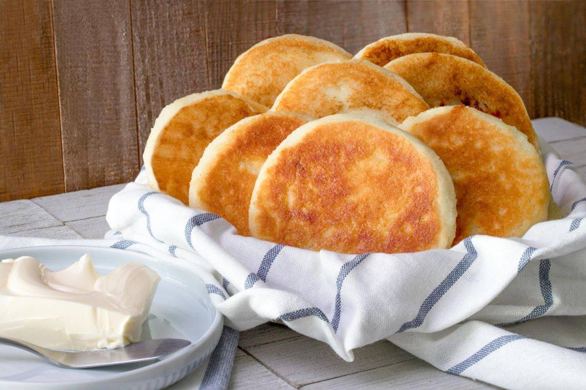

Arepas de Queso

These Arepas have a crispy crust while the cheese inside stays melty and gives you that cheese-pull that everyone knows and loves.
My first Colombian dish that I ever tried were these Cheese-filled delights made by my then girlfriend and wife-to-be.
Nothing beats exploring the markets across the many cities in Colombia and finding a stall cooking up these tasty treats!
Ingredients
Arepa Dough
- Full-cream milk 300 ml
- Corn flour 315 grams
- Wheat flour 150 grams
- Butter 80 grams
- Colombian Fresh Cheese (or 50/50 mix of Feta and Ricotta) 225 grams
- Pinch of salt (to taste)
Arepa Filling
- Colombian Fresh Cheese (or 50/50 mix of Feta and Ricotta) 600 grams
- Wheat flour 50 grams
- Sugar 100 grams
Steps
Making the Dough
- In a bowl mix cornmeal , wheat flour , shredded cheese, creamed butter and milk. Knead with your hands until the ingredients are combined and you get a soft bun. Reserve
Making the Filling
- Grind the cheese with the mill and mix with flour , sugar and join with your hands. Reserve.
Cooking the Arepas
- Take small balls of dough, crush them until you get a circular dough 5 cm in diameter, place a ball of filling in the center and cover with another circle of dough.
- Close the edges well and shape with your hands until you have a compact arepa approximately 3 cm high.
- Cook over low heat in a pan with butter on both sides until golden brown .
- Bake in the oven until the dough and filling are cooked (approximately 10 minutes).